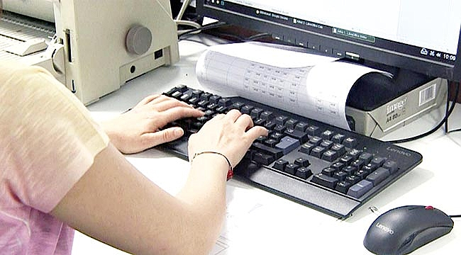
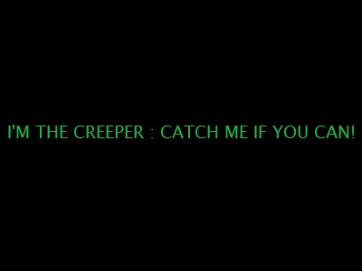

C# Forms ve Veritabanı ile Overloads Konusu üzerinde Form Uygulaması
C# Windows Forms ve veritabanı kullanarak Overloads (Aşırı Yükleme) konusunu uygulayan bir form uygulaması geliştirmek, kullanıcıların belirli işlevlerin farklı parametre setleriyle nasıl kullanılabileceğini anlamalarına yardımcı olur. Aşırı yükleme, aynı isimli birden fazla yöntemin (method) farklı parametre listeleri ile tanımlanmasıdır.
Rastgele girilen (-50 ve +50) 25 elemanlı bir sayı dizisinin en büyük ve en küçük elemanlarının ortalamasını bulan c# Konsol Uygulaması
C# Windows Forms uygulaması ile Rastgele girilen (-50 ve +50) 25 elemanlı bir sayı dizisinin en büyük ve en küçük elemanlarının ortalamasını bulan bir uygulama.
C# İki boyutlu diziler Elemanları rastgele girilen 4x4 matris oluşturan C# Windows Forms uygulaması
C# ile iki boyutlu diziler kullanarak rastgele elemanlardan oluşan 4x4 matris oluşturmak, belirli bir boyutta (bu örnekte 4x4) sayılardan oluşan bir tablo (matris) yaratmak için kullanılır
+90 546-580-35-21
kayrausta04@gmail.com
Merhaba, ben Kayra Halil Usta. Kırklareli Üniversitesinde Bilgisayar Programcılığı, Eskişehir
Anadolu Üniversitesinde Web Tasarımı Ve Kodlama okuyorum. 4 Ekim 2004 İstanbul doğumluyum. Okulda
kendim ve arkadaşlarımın projelerini ve araştırmalarını bilgisayar ile ilgili bölüm okuyan ve bilgisayar
ile ilgilenen herkese yardımcı olması amacı ile paylaşıyorum. Ayrıca yine üniversiten arkadaşlarla kurduğumuz KRKIT.COM adresinde ve İnstagram sayfasında
her türlü web hizmetini veriyoruz. Detaylı bilgi için ilgili linklerden ulaşabilirsiniz.
Bilgisayarla İlgili İlginç Bilgiler;

Q klavye insanların daha yavaş yazması için geliştirilmiştir:
1860'larda mekanik daktilolarında sıkışma sorunlarını azaltmayı hedefliyordu. Hızlı yazma sırasında harflerin birbirine yakın olan tuşlar nedeniyle daktilo kolları birbirine çarpıyordu. Bu yüzden sık kullanılan harfler, kolların birbirine çarpmasını önlemek için bilinçli olarak uzak yerlere yerleştirildi. Sonuç olarak, insanlar daha yavaş yazmak zorunda kaldı.
Bilgisayarda birşeyler yazmaya başladığımızda nefes alış verişimiz sıklaşır:
Bu, screen apnea olarak bilinen bir durumdur. Özellikle uzun süre bilgisayar başında çalışan veya yazı yazan kişilerde, bu alışkanlık stres, yoğun dikkat ve fiziksel hareketsizliğin bir sonucu olarak ortaya çıkar.

Creeper Programı:
Discovery tarafından belirtildiği gibi, genellikle ilk virüs olarak değerlendirilen Creeper programı, 1971'de BBN'den Bob Thomas tarafından oluşturuldu.Creeper'ın kötü bir amacı yoktu ve yalnızca basit bir mesaj gösteriyordu: "BEN CREEPER. SIKIYORSA YAKALA!"
İnsanlar normalde bir dakikada 20 kez gözlerini kırparlerken bu rakam bilgasayar kullanırken sadece 7’dir:
Bu durumu önlemek için gözleri düzenli olarak kırpmak, belirli aralıklarla ekranın dışına bakmak (örneğin, 20-20-20 kuralı: her 20 dakikada bir, 20 feet (yaklaşık 6 metre) uzaklıkta bir nesneye 20 saniye bakmak) ve yeterli aydınlatma sağlamak önemlidir.


 +90 546-580-35-21
+90 546-580-35-21 kayrausta04@gmail.com
kayrausta04@gmail.com